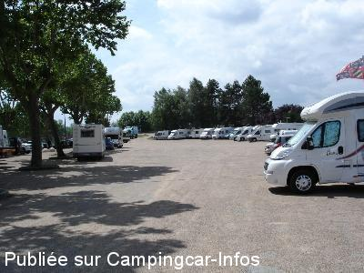
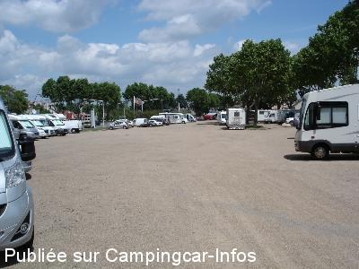
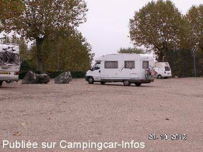
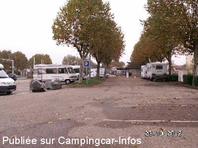
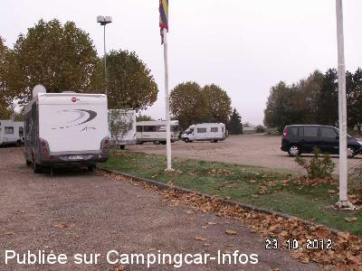
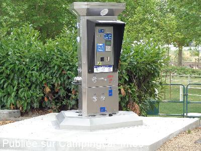

ASN = Aire de services avec stationnement nuit possible de :
DIGOIN
(N° 375)
Accès/adresse :
D979B
Place de la Grève
71160 DIGOIN
Place de la Grève
71160 DIGOIN
Latitude : (Nord) 46.481° Décimaux ou 46° 28′ 51′′
Longitude : (Est) 3.97165° Décimaux ou 3° 58′ 17′′
Tarif : 2015
Eau 100 L et/ou 1h d'électricité : 2 € / jeton
Distributeur de jetons par carte bancaire
Type de borne : EURO-RELAIS
Services :


A proximité restauration, commerces
Autres informations :
Ouvert à l'année
10 emplacements goudronnés, éclairés, ombragés
6 branchements électriques
Tél : +33(0)385 530 081
http://www.ccval.fr/office-de-tourisme-digoin-val-de-loire

Le 27/06/2015 par inconu

Le 27/06/2015 par inconu

Le 22/08/2014 par Gilles

Le 22/08/2014 par Gilles

Le 22/08/2014 par Gilles

Le 02/08/2014 par cadadou
de
lebullois
le 28/06/2015 :
Passé une nuit fin juin. Aire pratique en ville, au mois 40 CC. Merci à la commune. Beaucoup de circulation jusqu'à 20h. après très calme. A voir le pont canal. Boulangerie à 5 min. à pied.
Passé une nuit fin juin. Aire pratique en ville, au mois 40 CC. Merci à la commune. Beaucoup de circulation jusqu'à 20h. après très calme. A voir le pont canal. Boulangerie à 5 min. à pied.
de
jacques
le 25/03/2015 :
Nous avons apprécié l'endroit malgré les températures fraîches, super pour les balades à vélo. Par contre ce qu'il faut rectifier sur les commentaires du site concernant la borne il n'y a pas de jeton gratuit pour 5 achetés. À rectifier
Nous avons apprécié l'endroit malgré les températures fraîches, super pour les balades à vélo. Par contre ce qu'il faut rectifier sur les commentaires du site concernant la borne il n'y a pas de jeton gratuit pour 5 achetés. À rectifier
de
François
le 20/03/2015 :
J'ai passé une nuit sur cette aire. Beaucoup de place, malgré un carrefour à proximité peu de bruit. Quelques jeunes dans le parc à côté avec des scoots, mais à 22h grand calme.
J'ai passé une nuit sur cette aire. Beaucoup de place, malgré un carrefour à proximité peu de bruit. Quelques jeunes dans le parc à côté avec des scoots, mais à 22h grand calme.
de
cadadou
le 02/08/2014 :
L'aire de services est opérationnelle.
L'aire de services est opérationnelle.
de
Jean louis
le 08/08/2013 :
Parking très calme et spacieux, avec vue sur la Loire et à 250m du joli centre ville. Merci a la municipalité.
Parking très calme et spacieux, avec vue sur la Loire et à 250m du joli centre ville. Merci a la municipalité.
de
Xtian74
le 24/02/2013 :
Tout le secteur est en travaux . Il est toutefois encore possible d'y stationner et nous étions 8 CC à y avoir passé la nuit dernière sous la neige avec une température bien négative...
Tout le secteur est en travaux . Il est toutefois encore possible d'y stationner et nous étions 8 CC à y avoir passé la nuit dernière sous la neige avec une température bien négative...
de
Chantal E.
le 10/03/2011 :
Aire très fréquentée, de nombreux CC. Située sur un carrefour de routes, donc potentiellement bruyante. Nous avons préféré voir plus loin.
Aire très fréquentée, de nombreux CC. Située sur un carrefour de routes, donc potentiellement bruyante. Nous avons préféré voir plus loin.
de
Philippe Lecler
le 09/09/2010 :
De passage, nous avons apprécié la nuit passée sur cette aire ainsi que les croissants de la boulangerie un peu plus haut. Merci à la municipalité pour son accueil.
De passage, nous avons apprécié la nuit passée sur cette aire ainsi que les croissants de la boulangerie un peu plus haut. Merci à la municipalité pour son accueil.